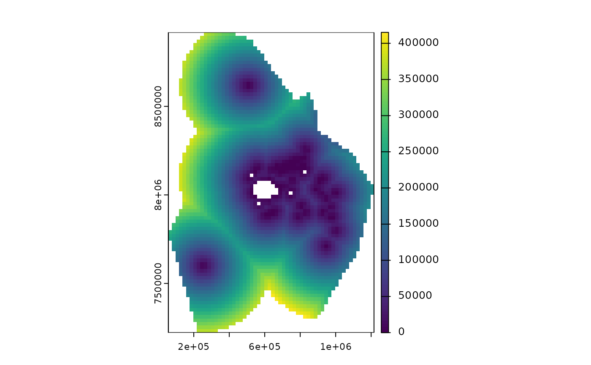
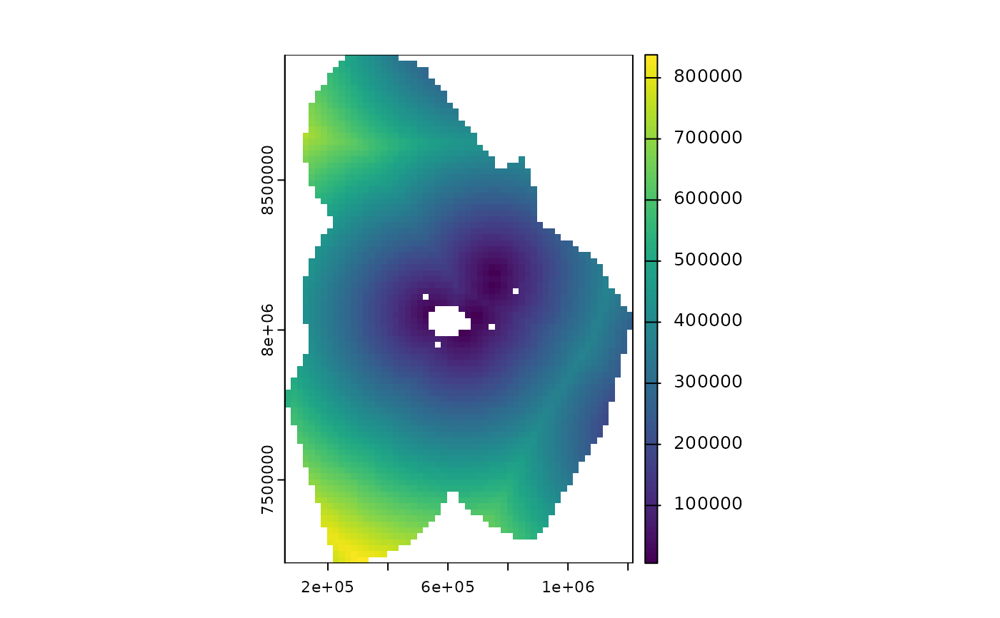
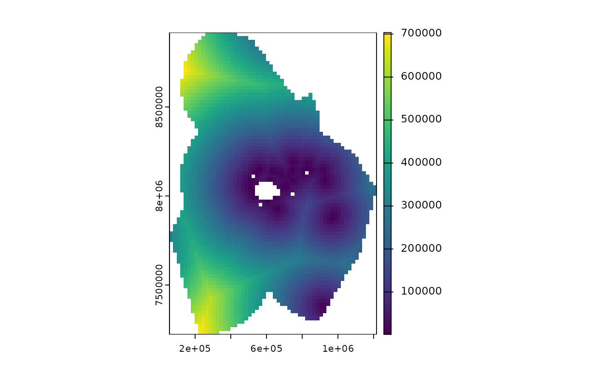

Get distance to port or shore for a spatial grid
get_dist.RdCalculates distance from shore, port or anchorage for each grid
cell in the provided spatial grid. Spatial grid can be terra::rast() or
sf format.
Usage
get_dist(
spatial_grid,
dist_to = "shore",
raw = FALSE,
inverse = FALSE,
name = NULL,
antimeridian = NULL
)Arguments
- spatial_grid
sforterra::rast()grid, e.g. created usingget_grid(). Alternatively, if raw data is required, ansfpolygon can be provided, e.g. created usingget_boundary(), and setraw = TRUE.- dist_to
characterwhich data to use to calculate distance to. Default is"shore"(Natural Earth land polygons); other possible values are"ports"(WPI Ports),"anchorages_land_masked","anchorages_grouped"and"anchorages_all"(GFW anchorages).- raw
logicalset to TRUE to retrieve the raw shore, port or anchorage data within the extent of thespatial_grid. Note that the closest shore, port or anchorage may be outside the extent.- inverse
logicalset toTRUEto get the inverse of distance, i.e. highest values become lowest and vice versa. Can be useful if the result is to be used as a proxy for fishing activity, where the closer a grid cell is to the port or shore, the more fishing activity there might be. Default isFALSE.- name
string; name of raster or column in sf object that is returned- antimeridian
Does
spatial_gridspan the antimeridian? If so, this should be set toTRUE, otherwise set toFALSE. If set toNULL(default) the function will try to check ifspatial_gridspans the antimeridian and set this appropriately.
Value
a terra::rast or sf object (same type as spatial_grid input)
with distance to shore for each grid cell.
Shore
The Natural Earth high resolution land polygons are used as the shoreline and are downloaded from the Natural Earth website (https://www.naturalearthdata.com/downloads/10m-physical-vectors/), so an internet connection is required.
Ports
Port locations are downloaded directly from the World Port Index (Pub 150): https://msi.nga.mil/Publications/WPI.
Anchorages
The anchorages data is from Global Fishing Watch and identifies anchorages as
anywhere vessels with AIS remain stationary for 12 hours or more (see
https://globalfishingwatch.org/datasets-and-code-anchorages/). This results
in a very large number of points (~167,000). Calculating distance from all
these points to each grid cell is computationally expensive. Anchorages close
together have the same names, so to reduce the number of anchorages, they are
aggregated by iso3 code (country code) and label (name) and the mean
longitude and latitude coordinates obtained to get one anchorage point per
name in each country. This data can be used by specifying dist_to = "anchorages_grouped".
To further reduce the number of points, anchorages within countries' land
boundaries, e.g. along rivers, can be removed. I do this by buffering the
Natural Earth land boundaries by 10km inland so as to avoid cutting off
coastal anchorages that fall within the land boundary, due to inaccuracies in
the Natural Earth land boundaries, e.g. for islands and other small scale
coastlines, and then masking points that fall within the resulting polygons.
This data can be used by specifying dist_to = "anchorages_land_masked".
The full anchorages dataset can be used by specifying dist_to = "anchorages_all", but this option may take a long time to calculate and/ or
cause your system to hang.
Examples
# Get some EEZ data first
fiji_eez <- get_boundary(name = "Fiji")
# Get a raster spatial grid for Fiji
fiji_grid <- get_grid(boundary = fiji_eez, crs = 32760, resolution = 20000)
#get distance from shore for each cell in the raster
dist_from_shore_rast <- get_dist(fiji_grid)
terra::plot(dist_from_shore_rast)

#get distance to ports
dist_ports <- get_dist(fiji_grid, dist_to = "ports")
terra::plot(dist_ports)

#get distance to anchorages, as defined by Global Fishing Watch data
dist_anchorages <- get_dist(fiji_grid, dist_to = "anchorages_land_masked")
terra::plot(dist_anchorages)
